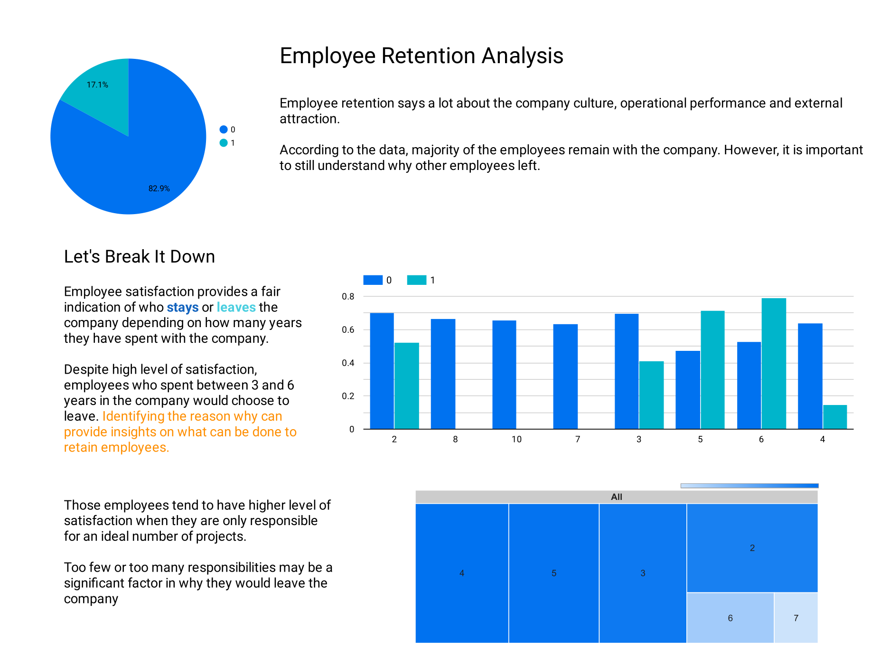
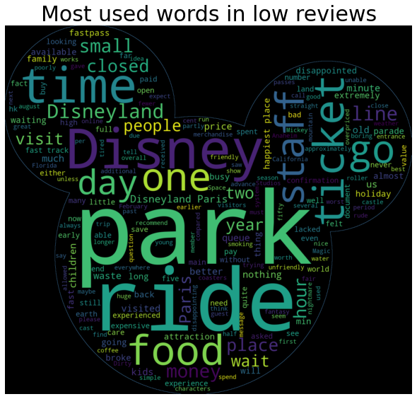

Data Analyst | Data Scientist
Taking a leap into data-fed resources to make data-driven solutions. Come see what I am working on.
Business Intelligence(BI) tools are widely used in company settings that allow technical and non-technical individuals to generate data visualizations. BI tools comes in handy when it comes to showing the necessary information and prompting actions from the audience. A few popular BI tools includes Tableau, Power BI and Google Data Studio.
Here is my experience using Google Data Studio for the first time.

Using Google Data Studio was a breeze and I had spent almost no time in figuring out how to navigate around the window. Google Data Studio allows for me import large dataset and immediately generate charts onto a dashboard.
From my experience using Google Data Studio, I was able to add charts onto the dashboard, select the features for the x & y axes, apply filters onto the chart and add annotation onto the dashboard.
Last but certainly not least, Google Data Studio allows for the dashboard to be exported into a PDF file.
Python project of an analysis on Disneyland reviews using NLTK, Sentiment Analysis and WordCloud. The dataset was taken from Kaggle.

The project explores importing huge dataset and an image file into a python project using Google Colab. Using the Sentiment Intensity Analyzer from the NLTK library, the analyzer is able to identify the sentiment of the reviews from the park visitors and then, it is sorted from the most positive review to the most negative review.
As an added bonus, the projects also explores the extensive parameters of the WordCloud library for added customizability as demonstrated in the image above.
Click here to see the project
Python project of an analysis on Disneyland reviews using NLTK, Sentiment Analysis and WordCloud. The dataset was taken from Kaggle.
The project explores the process of data cleaning and processing before fitting it into the Decision Tree Classifier. Using the Decision Tree Classifier from the SciKit Learn library, the decision tree is able to predict if the customer will continue to use the service based on current lifestyle and consumer habits.
Click here to see the project
Python project of forecasting sales performance based on social media advertisement activites using Linear Regression.
The project explores using Linear Regression from SciKit Learn to predict the expected sales performance based on the budget distribution across 3 different social media platforms and evaluate the performance of the machine learning model itself.
Click here to see the project